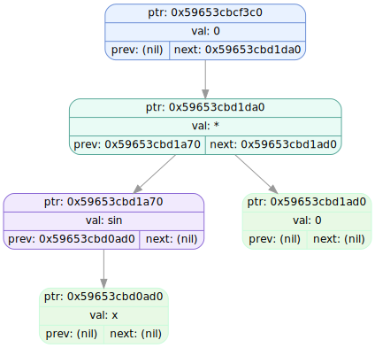

====================[ TREE DUMP #7 ]====================
Timestamp: 2025-12-04 06:45:17
FF
===================================================
tree ptr : 0x50b0000009e0
root ptr : 0x504000000550
size : 4
stack ptr : 0x506000000500
buff.ptr : (nil)
buff.len : 0
list idx : 1
-- Created at (tree ver_info) --
file: source/forest_operations.cpp
func: forest_add_tree
line: 105
-- Called at (passed ver_info) --
file: source/tests.cpp
func: test_DSL
line: 174
IDX NODE PTR TYPE LEFT PTR RIGHT PTR VALUE
---- -------------- -------------- -------------- -------------- --------------------
0 0x504000000550 FUNCTION 0x504000000510 0x504000000490 +
1 0x504000000510 FUNCTION 0x5040000004d0 (nil) sin
2 0x5040000004d0 CONSTANT (nil) (nil) 1.000000
3 0x504000000490 CONSTANT (nil) (nil) 2.000000
SVG: dumps/tree_dump_007.svg
